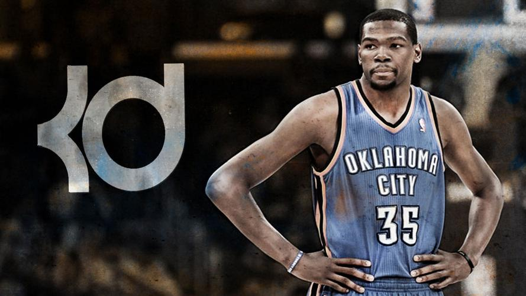

Death

凯文·杜兰特（Kevin Durant），全名凯文·韦恩·杜兰特（Kevin Wayne Durant），1988年9月29日出生于美国华盛顿哥伦比亚特区，美国职业篮球运动员，司职前锋，效力于NBA菲尼克斯太阳队。2007年NBA选秀，凯文·杜兰特在首轮第二顺位被西雅图超音速队（现俄克拉荷马城雷霆队）选中，2008年随球队搬迁到俄克拉荷马州。2014年同时荣膺NBA得分王与常规赛MVP。2016年，杜兰特加盟金州勇士队，于2016-17赛季、2017-18赛季随队夺得NBA总冠军并两度成为总决赛MVP（FMVP）。2019年，杜兰特加盟布鲁克林篮网队。2021年10月，杜兰特入选NBA75大巨星。2023年，杜兰特被交易至菲尼克斯太阳队。2010年土耳其世锦赛，凯文·杜兰特带领美国队夺得冠军并当选MVP。2012年伦敦奥运会、2016年里约奥运会以及2020年东京奥运会，杜兰特帮助美国男篮三夺金牌。